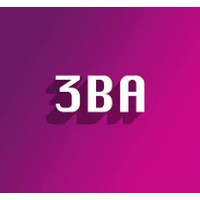
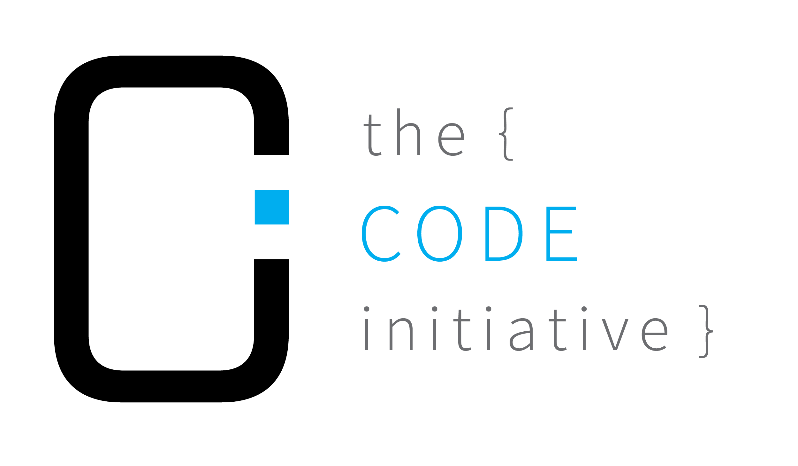

Education
University of British Columbia - Faculty of Science
2020-2024
Vancouver, BC
I am a second year student in the faculty of science intending to major in computer Science. I have a strong passion for software,
music and 3d-printing, and am always eager to explore and learn about new technologies.
My courseload and schedule includes many technical
courses, learning essential concepts in computer science, software engineering, and data science. Currently,
I have completed courses in object-oriented programming, linear algebra, data structres and algorithms, data science, and more. Outside of school,
I have taken online courses in deep learning and AI, and continue to learn more about machine learning and web development.
Experience
April 2022 - September 2022
At Madison's Lumber Reporter, I researched and updated Canadian and US solid wood and pulp & paper producer entries in
the company’s directory. I was tasked to use advanced Excel functions and formulas to sort through data, updating more
than 300+ entries.

June 2020 - Present
As a co-founder of 3BA Printing, my goal was to help businesses and customers with product design and additive
manufacturing. My main role consisted of operating the site where I developed a scalable online store using CSS and
JavaScript to sell 3D printers, boosting sales by 71%. I also manufactured and designed a biotechnology product with 13
engineers and executives to eliminate needle-stick injuries in healthcare.

Jan 2021 - Sept 2021
I introduced young kids to introductory coding languages by running workshops in Web Development, Python, and Java.
I received positive feedback from the parents of more than 5+ students in regards to my teaching and engagement
with students.
Technical Projects

StormHacks 2022 - Online Transactions Platforms
I developed a front-end web application with a team of 4, allowing users to process secure transactions similar to Ethereum
Allows users to utilize the benefits of Hashgraph transactions with secure tokens
Won 1st place out of 86 teams in Hackathon for category: Best Blockchain Project Using Hedera
Spearheaded front-end design with CSS and created over 8 components, including our project logo and chat
function

Dark Mode Chrome Extension
Changes the colour of web pages to a dark colour, helping users in visualizing web-pages
•Developed the ability for users to toggle back and forth between light and dark mode
•Inverts the colour of a site by auto-detecting the current colour, without overriding logos or buttons
Task Organizer
Developed a To-Do List in Java as part of my school’s Object-Oriented course
•Wrote unit testing frameworks using JUnit for over 4000+ lines of code and used a GUI to visualize the To-Do List
•Received 100% code coverage using JUnit for unit testing, ensuring all cases are covered.

COVID-19 Case Count Visualizer
Used CSV files of COVID-19 data to create plots of the number of case-counts per BC Health Authority
•Incorporated data analysis techniques such as regression and classification to help model plots
•Made as a final project for my computer science course, receiving 100%
Interests
Music
Playing the piano and guitar has been a big part of my life and it's a hobby I turn to when I need to destress.
I learned piano when I was young, and I also played trumpet in my school's wind ensemble for 6 years.
My favourite moments were playing in the BCMEA Honour Wind Ensemble in my grade 12 year and going on tour with my school band to Havana, Cuba.
Soccer
Being fortunate enough to live in British Columbia, I have developed a love for hiking.
For me, it's a great way for to sightsee and get some exercise done.
I try to make time to go explore BC's breathtaking trails yearly. I have done
excursions in Squamish, Golden Ears, Whistler, and the Juan de Fuca trail, to name a few
3D Printing
3D printing has been a big interest of mine since starting my own company
Get In Touch
Please feel free to reach out to me by email. I am also happy to connect on Linkedin.


{kind=link}